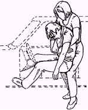
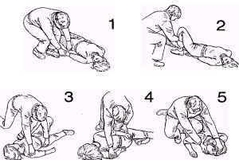

TRAFÝK
KAZALARI
Trafik kazalarýnda, araç içinde bulunan bir þahsý veya þahýslarý aþaðýdaki tehlikeler beklemektedir:
* Yaralanma sonucu dýþ kanamalar
* Çarpma sonucu burkulma, çýkýk ve kýrýklar.
* Çarpma sonucu beyin veya iç organ kanamalarý.
DÝKKAT: Kazaya uðramýþ bir araç içindeki kiþinin veya kiþilerin nasýl bir zarara uðradýðýný
kestirmek zordur. En çok baðýrýp çaðýran kiþiye deðil; sessizce oturan ve sabit nazarlarla bakan
kiþiye öncelik veriniz. Zira þiddetli bir beyin sarsýntýsý geçiren veya aþýrý kan kaybeden kiþi, bayýlmasa bile soka girmiþ demektir.
Kazada en çok korkulan durum beyin kanamasý veya belkemiði kýrýklarýdýr. Kaburga kýrýklarý da ayný þekilde ciddiye alýnmalýdýr. Kýrýk kaburgalar iç organlarýndan birine batarak iç kanamalara sebebiyet verebilir.
* Kazazede bayýlmýþ veya soka girmiþ ise ve emniyet kemerine baðlý halde duruyor ise hiçbir müdahalede bulunmadan polise ve hastahanenin ilgili
servisine telefon ederek kaza mahallinin adresini haber veriniz.
* Kazazede emniyet kemerine baðlý deðil ve direksiyonun üzerine yýðýlýp kalmýþ ise; oturduðu koltuðun arka kýsmýný kumanda
kolu ile hafifçe geriye yatýrýnýz. Kazazedenin baþýný yavaþ yavaþ kaldýrarak
bel ve boyun omurgasýný dik tutmaya gayret ederek
 |
arkaya yaslayýnýz. Böylece kazazedenin rahat nefes almasýný saðlamýþ olacaksýnýz. Boyun ve bel omurgasýný dik tutmanýzý
istememizdeki maksat, boyun veya belkemiðindeki bir kýrýk
ihtimalindendir. Beyin ve soðancýðýn uzantýsý olan sinir aðý, belkemiði içindeki omirilikten geçmektedir. Omurga kýrýklarýnda omiriliðin
zedelenme ihtimali oldukça yüksektir. Omuriliðin zedelenmesi halinde sinir lifleri kopacak ve kazazede felçlere maruz kalacaktýr. * Kazaya maruz kalan kiþi baygýn ise ve kanamasý da yok ise bir iç kanama veya kýrýktan þüphe etmemiz gerekir. Bu sebeble onu arabadan dýþarýya çýkarmaya çalýþmayýnýz. Koltuðuna dik oturacak þekilde emniyet kemeri ile baðlayýnýz. Baþýný koltuða yaslamýþ olarak yardým gelmesini bekleyiniz. * Eðer bir dýþ kanama geçiriyor ise "kanamalar" konusunda anlatýldýðý þekilde kanamayý durdurmaya çalýþýnýz. Bu iþlemi yaparken yine bel ve boyun omurgasýný dik tutmaya dikkat ediniz. |
KAZAZEDE DIÞARIDA BAYGIN YATIYOR
ÝSE
* Kazadan sonra sürücü veya yolculardan biri arabadan çýkmýþ; ancak þuurunu kaybederek bayýlmýþ olabilir. Bu durum, bir beyin kanamasýný veya dýþ kanamadan dolayý aþýrý kan kaybýný akla getirmelidir. Eðer bayýlmaya raðmen nefes alýþ-veriþi normal ise
-bir belkemiði kýrýðý olabileceðini hesaba katarak- kazazedeyi boylu boyunca uzatýnýz.
* Bayýlmýþ kiþinin kusabileceðini ve dilinin geriye doðru kývrýlarak nefes borusunu týkayabileceðini düþünerek -boynunda kýrýk yok ise- baþýný yana çeviriniz.
* Motosiklet kazasýnda baygýn düþmüþ birini gördüðünüz zaman yukarýdaki ayný tetbirleri alýnýz.
Baþýnda kaský varsa dikkatlice çýkarýnýz.

NOT: Kazayý mutlaka telefonla en yakýn hastahanenin acil servisine ve polise haber veriniz. Kazazedenin baþýnda beklemeniz gerekiyor ise; yoldan geçen bir arabayý durdurunuz. Sürücüsüne kazayý -yerini belirterek- polise ve hastahaneye telefonla haber vermesini isteyiniz.